Analysis of 3414 pooled colorectal cancer metagenomes
2025-08-27
Run ZiB analysis in q99 mode
Load dependencies
library(SummarizedExperiment)
library(tidyverse)
library(strainspy)
library(dplyr)
library(ggplot2)
library(ggvenn)
library(stringr)Load metadata
meta_path <- "./data/segata_pooled_3741/combined_metadata.tsv"
meta <- read.csv(meta_path, sep = '\t')
# set up contrasts/reference levels
meta$disease = factor(meta$disease, levels = c("Control", "CRC", "Adenoma"))
meta$study = factor(meta$study)
meta$cascon = ifelse(meta$cascon == "Case", "Case", "Control")
meta$cascon = factor(meta$cascon, levels = c("Control", "Case"))
meta$country = factor(meta$country)
meta$sex = factor(meta$sex, levels = c("Female", "Male"))
# let's reset tumour stages
meta$tumour_stage_AJCC[meta$tumour_stage_AJCC == ""] = "NoTumour"
meta$tumour_stage_AJCC[meta$disease == "Adenoma"] = "Adenoma"
meta$tumour_stage_AJCC[meta$tumour_stage_AJCC == "CRC_stage_unlabelled"] = "Unstaged"
meta$tumour_stage_AJCC = factor(meta$tumour_stage_AJCC, levels = c("NoTumour", "Adenoma", "0", "I", "II", "III", "IV", "Unstaged"))
meta$tumour_location[meta$disease == "Control"] = "NoTumour"
meta$tumour_location[meta$disease == "Adenoma"] = "Adenoma"
meta$tumour_location = factor(meta$tumour_location, levels = c("NoTumour", "Adenoma", "transverse", "left_sided", "right_sided", "multiple_sites", "nd"))Load sylph outputs
sy <- read_sylph("./data/segata_pooled_3741/combined_q_99.tsv.gz") # q99)## Detected Sylph query output file.sy <- filter_by_presence(sy, min_nonzero = 342) # filter at 10%## Retained 20476 rows after filtering# annoying renames to match meta V sylph file
colnames(sy) <- gsub("_1", "", colnames(sy))
colnames(sy) <- gsub("_merged", "", colnames(sy))
colData(sy)$Sample_file <- gsub("_1", "", basename(colData(sy)$Sample_file))
colData(sy)$Sample_file <- gsub("_merged", "", colnames(sy))
dim(sy)## [1] 20476 3414# Checks before merging metadata
all(colnames(sy) %in% meta$run_accession)## [1] TRUEall(meta$run_accession %in% colnames(sy))## [1] TRUEsy = modify_metadata(sy, meta)Fit the model
design <- as.formula("~ disease + age + sex + BMI + (1 | study)")
save_path <- "output_rds/CRC_zib_q_99_ebp.rds"
# Run with ebp - this looks a bit less noisy
if(file.exists(save_path)){
ZB_fit <- readRDS(save_path)
} else {
ebp = compute_eb_priors(sy, strainspy:::nobars_(design), nthreads = parallel::detectCores(),low_cutoff = 0, high_cutoff = Inf)
ZB_fit <- glmZiBFit(sy, design, MAP_prior = ebp, nthreads = parallel::detectCores())
saveRDS(ZB_fit, save_path)
}Visualise Outputs
Load GTDB taxonomy
taxonomy <- read_taxonomy("data/TAXONOMY/sylph_DB_taxonomy_99.tsv")Manhattan and Volcano plots
Control vs. Adenoma
plot_manhattan(ZB_fit, taxonomy = taxonomy, aggregate_by_taxa = T, coef = 3)## ! # Invaild edge matrix for <phylo>. A <tbl_df> is returned.
## ! # Invaild edge matrix for <phylo>. A <tbl_df> is returned.
## ! # Invaild edge matrix for <phylo>. A <tbl_df> is returned.
## ! # Invaild edge matrix for <phylo>. A <tbl_df> is returned.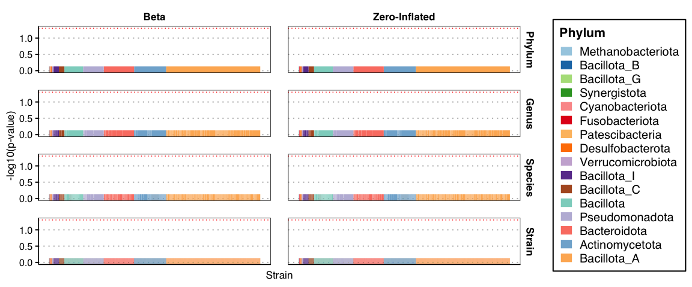
plot_manhattan(ZB_fit, taxonomy = taxonomy, aggregate_by_taxa = F, coef = 3)## ! # Invaild edge matrix for <phylo>. A <tbl_df> is returned.
## ! # Invaild edge matrix for <phylo>. A <tbl_df> is returned.
## ! # Invaild edge matrix for <phylo>. A <tbl_df> is returned.
## ! # Invaild edge matrix for <phylo>. A <tbl_df> is returned.
## ! # Invaild edge matrix for <phylo>. A <tbl_df> is returned.
## ! # Invaild edge matrix for <phylo>. A <tbl_df> is returned.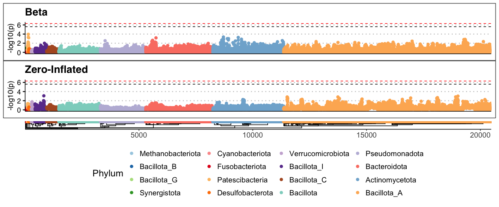
plot_volcano(ZB_fit, coef = 3)## Found 20476 tophits for diseaseAdenoma at alpha = 1 using holm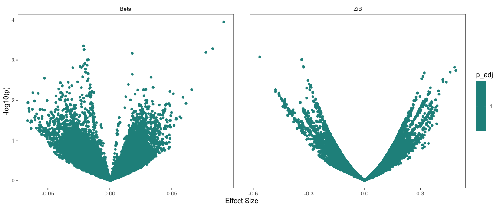
No real signal detected. This agrees with the original paper.
Control vs. CRC
plot_manhattan(ZB_fit, taxonomy = taxonomy, aggregate_by_taxa = T, coef = 2) ## ! # Invaild edge matrix for <phylo>. A <tbl_df> is returned.
## ! # Invaild edge matrix for <phylo>. A <tbl_df> is returned.
## ! # Invaild edge matrix for <phylo>. A <tbl_df> is returned.
## ! # Invaild edge matrix for <phylo>. A <tbl_df> is returned.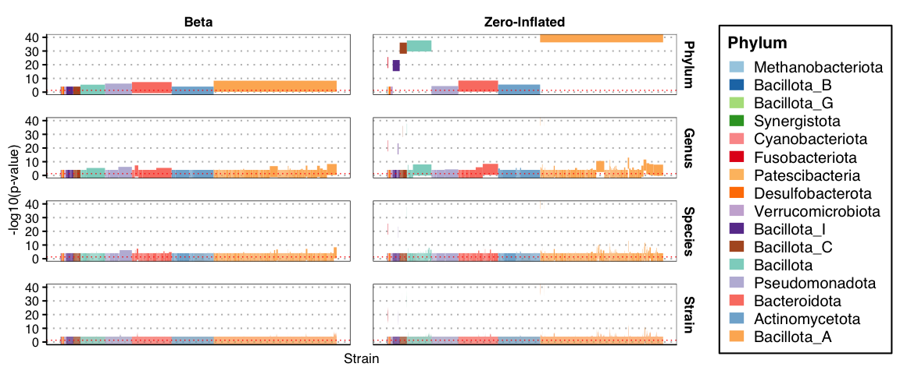
plot_manhattan(ZB_fit, taxonomy = taxonomy, aggregate_by_taxa = F, coef = 2) ## ! # Invaild edge matrix for <phylo>. A <tbl_df> is returned.
## ! # Invaild edge matrix for <phylo>. A <tbl_df> is returned.
## ! # Invaild edge matrix for <phylo>. A <tbl_df> is returned.
## ! # Invaild edge matrix for <phylo>. A <tbl_df> is returned.
## ! # Invaild edge matrix for <phylo>. A <tbl_df> is returned.
## ! # Invaild edge matrix for <phylo>. A <tbl_df> is returned.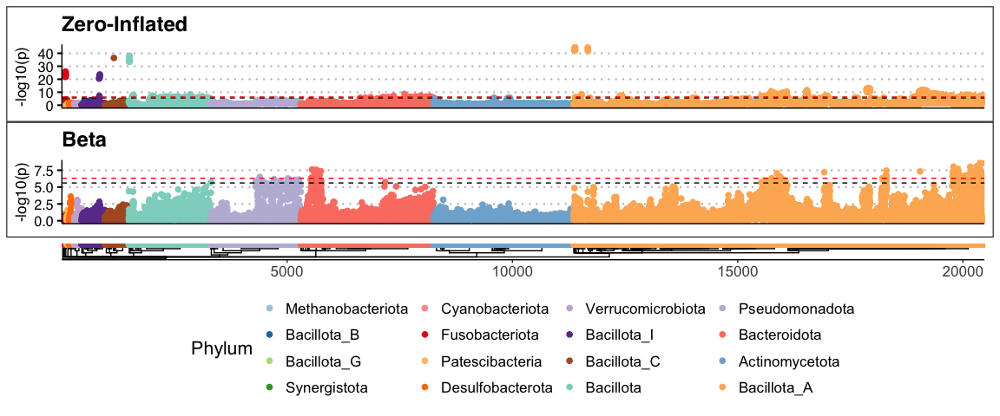
plot_volcano(ZB_fit, coef = 2)## Found 20476 tophits for diseaseCRC at alpha = 1 using holm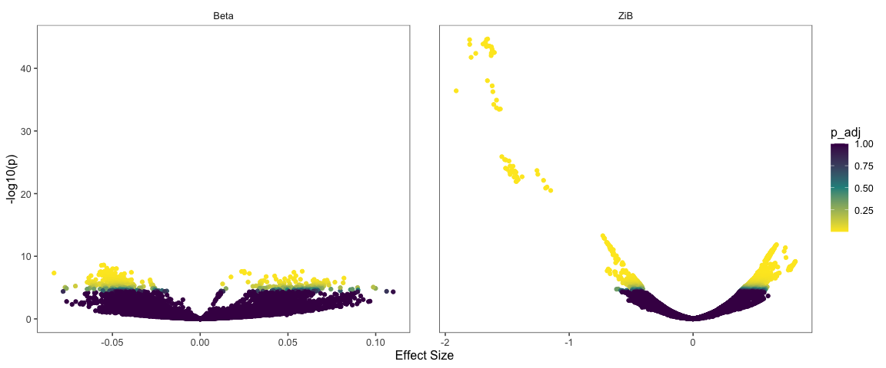
Looks like there are many hits.
Summarise and inspect
Build a summary from top hits
ZIB_th_path = "output_rds/CRC_zib_q_99_ebp_th_filtered.rds"
if(file.exists(ZIB_th_path)){
th = readRDS(ZIB_th_path)
} else {
th = top_hits(ZB_fit, coef = 2)
# Do the posthoc test
# Assumption: A strain is different if their ANI to a given ref is >1.5% different
th_ph = estimate_effect_sizes(sy, ZB_fit, th, beta_min_ani_diff = 1.5e-3,
nthreads = parallel::detectCores())
# contigs with good effect size and enough non-zero samples in Control-CRC groups
good_contigs = unique(th_ph$Contig_name[is.na(th_ph$Comment) & th_ph$Contrast == "Control - CRC"])
th = th[th$Contig_name %in% good_contigs,]
th$Species = taxonomy$Species[match(th$Genome_file, taxonomy$Genome)]
saveRDS(th, ZIB_th_path)
}
# Signals detected from 70 species
length(sort(table(th$Species), decreasing = T))## [1] 70# Ask chatGPT for a nice summary table
summary_tbl <- th %>%
filter(!is.na(Species)) %>%
group_by(Species) %>%
summarise(
N_hits = n(),
Top_adj_p_beta = min(p_adjust, na.rm = TRUE),
Top_coef_beta = coefficient[which.min(p_adjust)],
Top_se_beta = std_error[which.min(p_adjust)],
Top_contig_beta = Contig_name[which.min(p_adjust)],
Top_adj_p_ZI = min(zi_p_adjust, na.rm = TRUE),
Top_coef_ZI = zi_coefficient[which.min(zi_p_adjust)],
Top_se_ZI = zi_std_error[which.min(zi_p_adjust)],
Top_contig_ZI = Contig_name[which.min(zi_p_adjust)],
.groups = "drop"
) %>%
mutate(
Min_adj_p = pmin(Top_adj_p_beta, Top_adj_p_ZI, na.rm = TRUE),
Dominant_component = ifelse(Top_adj_p_beta < Top_adj_p_ZI, "Beta", "ZI"),
Dominant_contig = ifelse(Dominant_component == "Beta", Top_contig_beta, Top_contig_ZI),
Dominant_coef = ifelse(Dominant_component == "Beta", Top_coef_beta, Top_coef_ZI),
Dominant_se = ifelse(Dominant_component == "Beta", Top_se_beta, Top_se_ZI)
) %>%
select(Species, N_hits, Dominant_component, Min_adj_p, Dominant_coef, Dominant_se, Dominant_contig) %>%
arrange(Min_adj_p)
# Write as tsv for manual perusal
# write.table(summary_tbl, "output_tables/CRC_Z99_ebp_summary.tsv", sep = '\t', col.names = T, row.names = F, quote = F)ZI component hits
When the Dominant_component is ZI, negative and positive Dominant_coef indicates presence and absence in CRC compared to control.
Visualise this in a forest plot
zi_summary <- summary_tbl %>%
filter(Dominant_component == "ZI") %>%
arrange(Min_adj_p) %>%
mutate(
# Confidence interval before flipping
CI_low = Dominant_coef - 1.96 * Dominant_se,
CI_high = Dominant_coef + 1.96 * Dominant_se,
# Flip effect size and CI
Dominant_coef = -Dominant_coef,
CI_low = -CI_low,
CI_high = -CI_high,
# Trend annotation
Trend = ifelse(Dominant_coef > 0, "\u2191 CRC", "\u2193 CRC")
) %>%
arrange(Trend, desc(Dominant_coef)) %>%
mutate(Species = factor(Species, levels = rev(unique(Species))))
ggplot(zi_summary, aes(x = Dominant_coef, y = Species, color = Trend)) +
geom_point(aes(size = N_hits)) +
geom_errorbarh(aes(xmin = CI_low, xmax = CI_high), height = 0.2) +
geom_vline(xintercept = 0, linetype = "dashed") +
scale_color_manual(values = c("\u2191 CRC" = "red", "\u2193 CRC" = "blue")) +
scale_size_continuous(
name = "Strains",
range = c(2, 8), # tweak for your figure aesthetics
breaks = c(1, 45, 90),
labels = c("1", "45", "90"),
guide = guide_legend(override.aes = list(linetype = 0)) # remove lines from legend
) +
labs(
x = "Effect size",
y = "Species",
color = "Trend"
) +
theme_minimal(base_size = 16)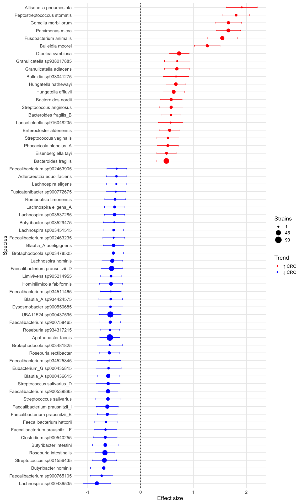
Beta component hits
When the Dominant_component is Beta, negative and positive Dominant_coef indicates lower and higher cANI in CRC compared to control, reflecting similarity of the strain to the reference. Higher estimates imply possibly larger strain differences in CRC compared to controls.
beta_summary <- summary_tbl %>%
filter(Dominant_component == "Beta") %>%
arrange(Min_adj_p) %>%
mutate(
CI_low = Dominant_coef - 1.96 * Dominant_se,
CI_high = Dominant_coef + 1.96 * Dominant_se,
Trend = ifelse(Dominant_coef > 0, "\u2191 CRC (similar)", "\u2193 CRC (divergent)"),
Species = factor(Species, levels = rev(unique(Species)))
) %>%
arrange(desc(Dominant_coef)) %>%
mutate(Species = factor(Species, levels = rev(unique(Species))))
ggplot(beta_summary, aes(x = Dominant_coef, y = Species, color = Trend)) +
geom_point(aes(size = N_hits)) +
geom_errorbarh(aes(xmin = CI_low, xmax = CI_high), height = 0.2) +
geom_vline(xintercept = 0, linetype = "dashed") +
scale_color_manual(values = c("\u2191 CRC (similar)" = "red",
"\u2193 CRC (divergent)" = "blue")) +
scale_size_continuous(
name = "Strains",
range = c(2, 8),
breaks = c(1, 60, 120),
labels = c("1", "60", "120")
) +
labs(
x = "Effect size (difference in ANI, CRC vs HC)",
y = "Species",
color = "Trend"
) +
theme_minimal(base_size = 16)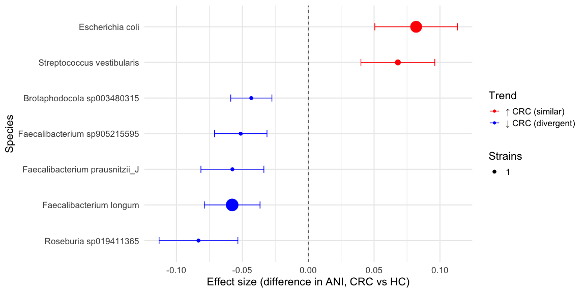
ANI distribution of the top strain of each beta detected species
plot_ani_dist(sy, phenotype = 'disease', contigs = beta_summary$Dominant_contig,
show_points = T, plot_type = 'box',
contig_names = as.character(beta_summary$Species))## Warning: Removed 8234 rows containing non-finite outside the scale range
## (`stat_boxplot()`).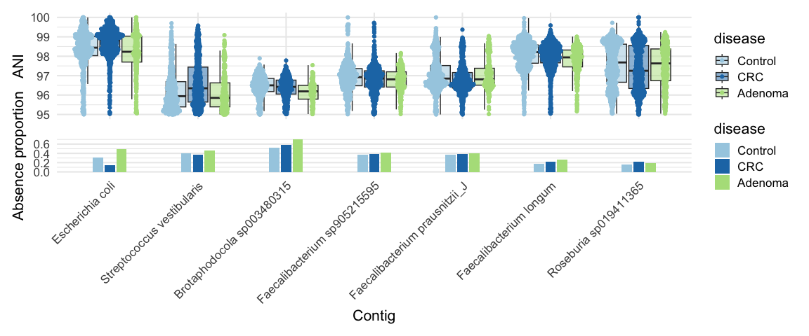
Associations with other metadata
Since tumour_stage_AJCC and tumour_location are highly correlated with disease, we’ll first fit separate models on subsets for direct comparison.
Tumour location
# Directly compare left vs. right
meta_lr_acc = which(meta$tumour_location == 'left_sided' | meta$tumour_location == 'right_sided')
lr_acc = meta$run_accession[meta_lr_acc]
meta_lr = meta[meta_lr_acc, c('run_accession', 'study', 'age', 'BMI', 'sex', 'tumour_location')]
meta_lr$tumour_location = factor(as.character(meta_lr$tumour_location), levels = c('left_sided', 'right_sided'))
# Reload sylph q99
sy <- read_sylph("./data/segata_pooled_3741/combined_q_99.tsv.gz") # q99)## Detected Sylph query output file.# annoying renames to match meta V sylph file
colnames(sy) <- gsub("_1", "", colnames(sy))
colnames(sy) <- gsub("_merged", "", colnames(sy))
colData(sy)$Sample_file <- gsub("_1", "", basename(colData(sy)$Sample_file))
colData(sy)$Sample_file <- gsub("_merged", "", colnames(sy))
# only lVr samples
sy = sy[, sapply(lr_acc, function(x) which(x == colnames(sy)))]
sy <- filter_by_presence(sy, min_nonzero = round(dim(sy)[2]/10)) # filter at 10%## Retained 21496 rows after filteringdim(sy)## [1] 21496 868# Checks before merging metadata
all(colnames(sy) %in% meta_lr$run_accession)## [1] TRUEall(meta_lr$run_accession %in% colnames(sy))## [1] TRUEsy = modify_metadata(sy, meta_lr)
design <- as.formula("~ tumour_location + age + sex + BMI + (1 | study)")
save_path <- "output_rds/CRC_zib_q_99_ebp_tumour_location_lVr.rds"
# Run with ebp - this looks a bit less noisy
if(file.exists(save_path)){
ZB_fit_tl <- readRDS(save_path)
} else {
ebp = compute_eb_priors(sy, strainspy:::nobars_(design), nthreads = parallel::detectCores(),low_cutoff = 0, high_cutoff = Inf)
ZB_fit_tl <- glmZiBFit(sy, design, MAP_prior = ebp, nthreads = parallel::detectCores())
saveRDS(ZB_fit_tl, save_path)
}Build a summary from top hits
th_tl = top_hits(ZB_fit_tl, coef = 2)## Found 81 tophits for tumour_locationright_sided at alpha = 0.05 using holm# There are no strain identity differences, post hoc testing ignored
th_tl$Species = taxonomy$Species[match(th_tl$Genome_file, taxonomy$Genome)]
# Signals detected from 11 species
length(sort(table(th_tl$Species), decreasing = T))## [1] 11# Ask chatGPT for a nice summary table
summary_tbl <- th_tl %>%
filter(!is.na(Species)) %>%
group_by(Species) %>%
summarise(
N_hits = n(),
Top_adj_p_beta = min(p_adjust, na.rm = TRUE),
Top_coef_beta = coefficient[which.min(p_adjust)],
Top_se_beta = std_error[which.min(p_adjust)],
Top_contig_beta = Contig_name[which.min(p_adjust)],
Top_adj_p_ZI = min(zi_p_adjust, na.rm = TRUE),
Top_coef_ZI = zi_coefficient[which.min(zi_p_adjust)],
Top_se_ZI = zi_std_error[which.min(zi_p_adjust)],
Top_contig_ZI = Contig_name[which.min(zi_p_adjust)],
.groups = "drop"
) %>%
mutate(
Min_adj_p = pmin(Top_adj_p_beta, Top_adj_p_ZI, na.rm = TRUE),
Dominant_component = ifelse(Top_adj_p_beta < Top_adj_p_ZI, "Beta", "ZI"),
Dominant_contig = ifelse(Dominant_component == "Beta", Top_contig_beta, Top_contig_ZI),
Dominant_coef = ifelse(Dominant_component == "Beta", Top_coef_beta, Top_coef_ZI),
Dominant_se = ifelse(Dominant_component == "Beta", Top_se_beta, Top_se_ZI)
) %>%
select(Species, N_hits, Dominant_component, Min_adj_p, Dominant_coef, Dominant_se, Dominant_contig) %>%
arrange(Min_adj_p)
# Write as tsv for manual perusal
# write.table(summary_tbl, "output_tables/CRC_Z99_tVl_direct_summary.tsv", sep = '\t', col.names = T, row.names = F, quote = F)There are only presence/absence hits.
ZI component hits
Negative and positive Dominant_coef indicates strain presence in the guts of patients with Left and Right CRC tumors, respectively.
Visualise this in a forest plot
zi_summary <- summary_tbl %>%
filter(Dominant_component == "ZI") %>%
arrange(Min_adj_p) %>%
mutate(
# Confidence interval before flipping
CI_low = Dominant_coef - 1.96 * Dominant_se,
CI_high = Dominant_coef + 1.96 * Dominant_se,
# Flip effect size and CI
Dominant_coef = -Dominant_coef,
CI_low = -CI_low,
CI_high = -CI_high,
# Trend annotation
Trend = ifelse(Dominant_coef > 0, "\u2191 Right", "\u2193 Left")
) %>%
arrange(Trend, desc(Dominant_coef)) %>%
mutate(Species = factor(Species, levels = rev(unique(Species))))
ggplot(zi_summary, aes(x = Dominant_coef, y = Species, color = Trend)) +
geom_point(aes(size = N_hits)) +
geom_errorbarh(aes(xmin = CI_low, xmax = CI_high), height = 0.2) +
geom_vline(xintercept = 0, linetype = "dashed") +
scale_color_manual(values = c("\u2191 Right" = "orange", "\u2193 Left" = "violet")) +
scale_size_continuous(
name = "Strains",
range = c(2, 8), # tweak for your figure aesthetics
breaks = c(1, 45, 90),
labels = c("1", "45", "90"),
guide = guide_legend(override.aes = list(linetype = 0)) # remove lines from legend
) +
labs(
x = "Effect size",
y = "Species",
color = "Trend"
) +
theme_minimal(base_size = 16)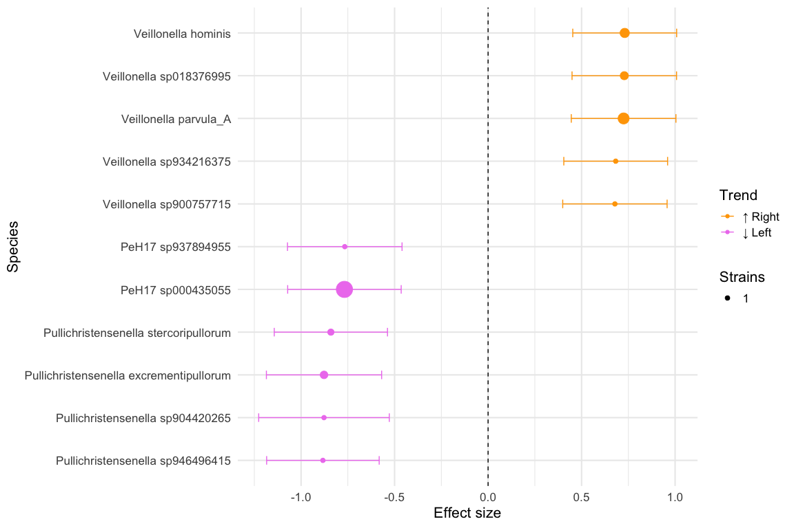
Looks like it is mostly dominated by Veillonella sp. and Pullichristensenella sp.. Veillonella parvula is one of the top hits in 10.1016/j.chom.2025.03.012, but we are not detecting any of the other hits.
Cancer stage
table(meta$tumour_stage_AJCC)##
## NoTumour Adenoma 0 I II III IV Unstaged
## 1478 614 90 231 230 258 289 224# Directly compare left vs. right
meta_stage_acc = which(meta$tumour_stage_AJCC == '0' |
meta$tumour_stage_AJCC == 'I' |
meta$tumour_stage_AJCC == 'II' |
meta$tumour_stage_AJCC == 'III' |
meta$tumour_stage_AJCC == 'IV')
stage_acc = meta$run_accession[meta_stage_acc]
meta_stage = meta[meta_stage_acc, c('run_accession', 'study', 'age', 'BMI', 'sex', 'tumour_stage_AJCC')]
meta_stage$tumour_stage_AJCC = factor(as.character(meta_stage$tumour_stage_AJCC), levels = c('0', 'I', 'II', 'III', 'IV'))
###################
##### No HITS #####
###################
#### Model 1 - compare stages 1,2,3 and 4 vs. stage 0
# Reload sylph q99
sy <- read_sylph("./data/segata_pooled_3741/combined_q_99.tsv.gz") # q99)## Detected Sylph query output file.# annoying renames to match meta V sylph file
colnames(sy) <- gsub("_1", "", colnames(sy))
colnames(sy) <- gsub("_merged", "", colnames(sy))
colData(sy)$Sample_file <- gsub("_1", "", basename(colData(sy)$Sample_file))
colData(sy)$Sample_file <- gsub("_merged", "", colnames(sy))
# only lVr samples
sy = sy[, sapply(meta_stage$run_accession, function(x) which(x == colnames(sy)))]
sy <- filter_by_presence(sy, min_nonzero = round(dim(sy)[2]/10)) # filter at 10%## Retained 21722 rows after filteringdim(sy)## [1] 21722 1098# Checks before merging metadata
all(colnames(sy) %in% meta_stage$run_accession)## [1] TRUEall(meta_stage$run_accession %in% colnames(sy))## [1] TRUEsy = modify_metadata(sy, meta_stage)
save_path <- "output_rds/CRC_zib_q_99_ebp_tumour_stage_0v.rds"
design <- as.formula('~tumour_stage_AJCC + age + sex + BMI + (1 | study)')
# Run with ebp
if(file.exists(save_path)){
ZB_fit_stage_full <- readRDS(save_path)
} else {
ebp = compute_eb_priors(sy, strainspy:::nobars_(design), nthreads = parallel::detectCores(),low_cutoff = 0, high_cutoff = Inf)
ZB_fit_stage_full <- glmZiBFit(sy, design, MAP_prior = ebp, nthreads = parallel::detectCores())
saveRDS(ZB_fit_stage_full, save_path)
}
# Variables
top_hits(ZB_fit_stage_full, coef = 2, method = "BH")## Warning in top_hits(ZB_fit_stage_full, coef = 2, method = "BH"): Multiple
## testing correction using `BH`: No significant associations detected for coef =
## 2 at alpha = 0.050000
## # A tibble: 0 × 10
## # ℹ 10 variables: Contig_name <chr>, Genome_file <chr>, coefficient <dbl>,
## # std_error <dbl>, p_value <dbl>, p_adjust <dbl>, zi_coefficient <dbl>,
## # zi_std_error <dbl>, zi_p_value <dbl>, zi_p_adjust <dbl>top_hits(ZB_fit_stage_full, coef = 3, method = "BH")## Warning in top_hits(ZB_fit_stage_full, coef = 3, method = "BH"): Multiple
## testing correction using `BH`: No significant associations detected for coef =
## 3 at alpha = 0.050000
## # A tibble: 0 × 10
## # ℹ 10 variables: Contig_name <chr>, Genome_file <chr>, coefficient <dbl>,
## # std_error <dbl>, p_value <dbl>, p_adjust <dbl>, zi_coefficient <dbl>,
## # zi_std_error <dbl>, zi_p_value <dbl>, zi_p_adjust <dbl>top_hits(ZB_fit_stage_full, coef = 4, method = "BH")## Warning in top_hits(ZB_fit_stage_full, coef = 4, method = "BH"): Multiple
## testing correction using `BH`: No significant associations detected for coef =
## 4 at alpha = 0.050000
## # A tibble: 0 × 10
## # ℹ 10 variables: Contig_name <chr>, Genome_file <chr>, coefficient <dbl>,
## # std_error <dbl>, p_value <dbl>, p_adjust <dbl>, zi_coefficient <dbl>,
## # zi_std_error <dbl>, zi_p_value <dbl>, zi_p_adjust <dbl>top_hits(ZB_fit_stage_full, coef = 5, method = "BH")## Warning in top_hits(ZB_fit_stage_full, coef = 5, method = "BH"): Multiple
## testing correction using `BH`: No significant associations detected for coef =
## 5 at alpha = 0.050000
## # A tibble: 0 × 10
## # ℹ 10 variables: Contig_name <chr>, Genome_file <chr>, coefficient <dbl>,
## # std_error <dbl>, p_value <dbl>, p_adjust <dbl>, zi_coefficient <dbl>,
## # zi_std_error <dbl>, zi_p_value <dbl>, zi_p_adjust <dbl>#### Model 2 - merge stages 0 and 1 as early and compare with 2, 3 and 4.
###################
##### HAS HITS ####
###################
meta_stage$tumour_stage_merged = sapply(as.character(meta_stage$tumour_stage_AJCC), function(x) ifelse( (x=='0'|x=='I'), 'Early', x))
meta_stage$tumour_stage_merged = factor(as.character(meta_stage$tumour_stage_merged), levels = c('Early', 'II', 'III', 'IV'))
save_path <- "output_rds/with_intercept/CRC_zib_q_99_ebp_tumour_stage_early0Iv.rds"
design <- as.formula('~tumour_stage_merged + age + sex + BMI + (1 | study)')
sy = modify_metadata(sy, meta_stage)## Warning in modify_metadata(sy, meta_stage): The following metadata columns already exist in `se` and will not be modified. To replace with provided meta_data, set run again with `replace = TRUE`:
##
## study, age, BMI, sex, tumour_stage_AJCC# Run with ebp
if(file.exists(save_path)){
ZB_fit_stage_early012V <- readRDS(save_path)
} else {
ebp = compute_eb_priors(sy, strainspy:::nobars_(design), nthreads = parallel::detectCores(),low_cutoff = 0, high_cutoff = Inf)
ZB_fit_stage_early012V <- glmZiBFit(sy, design, MAP_prior = ebp, nthreads = parallel::detectCores())
saveRDS(ZB_fit_stage_early012V, save_path)
}
# Variables
th_stage_1 = cbind(top_hits(ZB_fit_stage_early012V, coef = 2, method = "BH"), model = 'early01V', stage = 2)## Found 24 tophits for tumour_stage_mergedII at alpha = 0.05 using BHtop_hits(ZB_fit_stage_early012V, coef = 3, method = "BH")## Warning in top_hits(ZB_fit_stage_early012V, coef = 3, method = "BH"): Multiple
## testing correction using `BH`: No significant associations detected for coef =
## 3 at alpha = 0.050000
## # A tibble: 0 × 10
## # ℹ 10 variables: Contig_name <chr>, Genome_file <chr>, coefficient <dbl>,
## # std_error <dbl>, p_value <dbl>, p_adjust <dbl>, zi_coefficient <dbl>,
## # zi_std_error <dbl>, zi_p_value <dbl>, zi_p_adjust <dbl>th_stage_2 = cbind(top_hits(ZB_fit_stage_early012V, coef = 4, method = "BH"), model = 'early01V', stage = 4)## Found 6 tophits for tumour_stage_mergedIV at alpha = 0.05 using BH#### No results - Fig 3B from Segata paper - merge 0, 1 and 2 as early and compare with merged 3 and 4 (late)
meta_stage$tumour_stage_merged_earlyVlate = sapply(as.character(meta_stage$tumour_stage_AJCC), function(x) ifelse( (x=='0'|x=='I'|x=='II'), 'Early', 'Late'))
meta_stage$tumour_stage_merged_earlyVlate = factor(as.character(meta_stage$tumour_stage_merged_earlyVlate), levels = c('Early', 'Late'))
save_path <- "output_rds/CRC_zib_q_99_ebp_tumour_stage_early012Vlate34.rds"
design <- as.formula('~tumour_stage_merged_earlyVlate + age + sex + BMI + (1 | study)')
sy = modify_metadata(sy, meta_stage)## Warning in modify_metadata(sy, meta_stage): The following metadata columns already exist in `se` and will not be modified. To replace with provided meta_data, set run again with `replace = TRUE`:
##
## study, age, BMI, sex, tumour_stage_AJCC, tumour_stage_merged# Run with ebp
if(file.exists(save_path)){
ZB_fit_stage_early012Vlate34 <- readRDS(save_path)
} else {
ebp = compute_eb_priors(sy, strainspy:::nobars_(design), nthreads = parallel::detectCores(),low_cutoff = 0, high_cutoff = Inf)
ZB_fit_stage_early012Vlate34 <- glmZiBFit(sy, design, MAP_prior = ebp, nthreads = parallel::detectCores())
saveRDS(ZB_fit_stage_early012Vlate34, save_path)
}
# Variables
top_hits(ZB_fit_stage_early012Vlate34, coef = 2, method = "BH")## Warning in top_hits(ZB_fit_stage_early012Vlate34, coef = 2, method = "BH"):
## Multiple testing correction using `BH`: No significant associations detected
## for coef = 2 at alpha = 0.050000
## # A tibble: 0 × 10
## # ℹ 10 variables: Contig_name <chr>, Genome_file <chr>, coefficient <dbl>,
## # std_error <dbl>, p_value <dbl>, p_adjust <dbl>, zi_coefficient <dbl>,
## # zi_std_error <dbl>, zi_p_value <dbl>, zi_p_adjust <dbl>#### Has results - Fig 3C from Segata paper - merge 0, 1, 2, 3 as early and compare with 4
meta_stage$tumour_stage_merged_early3Vlate = sapply(as.character(meta_stage$tumour_stage_AJCC), function(x) ifelse( (x=='0'|x=='I'|x=='II'|x=="III"), 'Early', x))
meta_stage$tumour_stage_merged_early3Vlate = factor(as.character(meta_stage$tumour_stage_merged_early3Vlate), levels = c('Early', 'IV'))
sy = modify_metadata(sy, meta_stage)## Warning in modify_metadata(sy, meta_stage): The following metadata columns already exist in `se` and will not be modified. To replace with provided meta_data, set run again with `replace = TRUE`:
##
## study, age, BMI, sex, tumour_stage_AJCC, tumour_stage_merged, tumour_stage_merged_earlyVlatesave_path <- "output_rds/CRC_zib_q_99_ebp_tumour_stage_early0123V4.rds"
design <- as.formula('~tumour_stage_merged_early3Vlate + age + sex + BMI + (1 | study)')
# Run with ebp
if(file.exists(save_path)){
ZB_fit_stage_early0123V4 <- readRDS(save_path)
} else {
ebp = compute_eb_priors(sy, strainspy:::nobars_(design), nthreads = parallel::detectCores(),low_cutoff = 0, high_cutoff = Inf)
ZB_fit_stage_early0123V4 <- glmZiBFit(sy, design, MAP_prior = ebp, nthreads = parallel::detectCores())
saveRDS(ZB_fit_stage_early0123V4, save_path)
}
# Variables
th_stage_3 = cbind(top_hits(ZB_fit_stage_early0123V4, coef = 2, method = "BH"), model = 'early0123V', stage = 4)## Found 5 tophits for tumour_stage_merged_early3VlateIV at alpha = 0.05 using BHth_stage = rbind(th_stage_1, th_stage_2, th_stage_3)
th_stage$Species = taxonomy$Species[match(th_stage$Genome_file, taxonomy$Genome)]
summary_tbl <- th_stage %>%
filter(!is.na(Species)) %>%
group_by(Species, stage) %>%
summarise(
N_hits = n(),
Top_adj_p_beta = min(p_adjust, na.rm = TRUE),
Top_coef_beta = coefficient[which.min(p_adjust)],
Top_se_beta = std_error[which.min(p_adjust)],
Top_contig_beta = Contig_name[which.min(p_adjust)],
Top_adj_p_ZI = min(zi_p_adjust, na.rm = TRUE),
Top_coef_ZI = zi_coefficient[which.min(zi_p_adjust)],
Top_se_ZI = zi_std_error[which.min(zi_p_adjust)],
Top_contig_ZI = Contig_name[which.min(zi_p_adjust)],
.groups = "drop"
) %>%
mutate(
stage = stage,
Min_adj_p = pmin(Top_adj_p_beta, Top_adj_p_ZI, na.rm = TRUE),
Dominant_component = ifelse(Top_adj_p_beta < Top_adj_p_ZI, "Beta", "ZI"),
Dominant_contig = ifelse(Dominant_component == "Beta", Top_contig_beta, Top_contig_ZI),
Dominant_coef = ifelse(Dominant_component == "Beta", Top_coef_beta, Top_coef_ZI),
Dominant_se = ifelse(Dominant_component == "Beta", Top_se_beta, Top_se_ZI)
) %>%
select(Species, N_hits, stage, Dominant_component, Min_adj_p, Dominant_coef, Dominant_se, Dominant_contig) %>%
arrange(Min_adj_p)
# Write as tsv for manual perusal
# write.table(summary_tbl, "output_tables/CRC_Z99_ebp_stage_hits_summary.tsv", sep = '\t', col.names = T, row.names = F, quote = F)
plot_ani_dist(sy, phenotype = 'tumour_stage_merged_early3Vlate', contigs = summary_tbl$Dominant_contig, plot_type = 'box', show_points = F, contig_names = strainspy:::clean_contig_names(summary_tbl$Species))## Warning: Removed 7430 rows containing non-finite outside the scale range
## (`stat_boxplot()`).
## Warning: No shared levels found between `names(values)` of the manual scale and the
## data's colour values.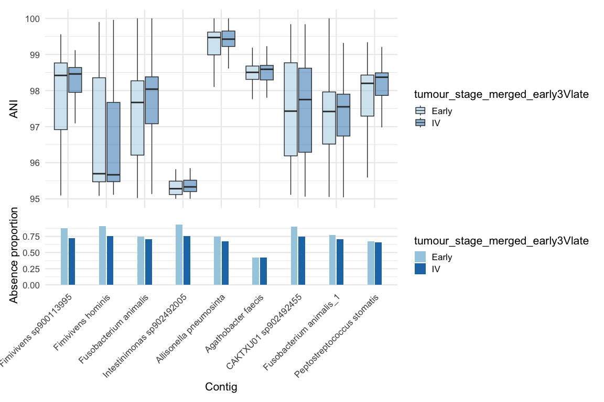
In short, it looks like species such as Fusobacterium animalis, Peptostreptococcus stomatis and Allisonella pneumosintes grow in prevalence as CRC progresses from very early stages and remains stable. Beneficial species such as Agathobacter faecis seems to get replaced by other different strains at later stages - possibly consistent with treatment intensity.